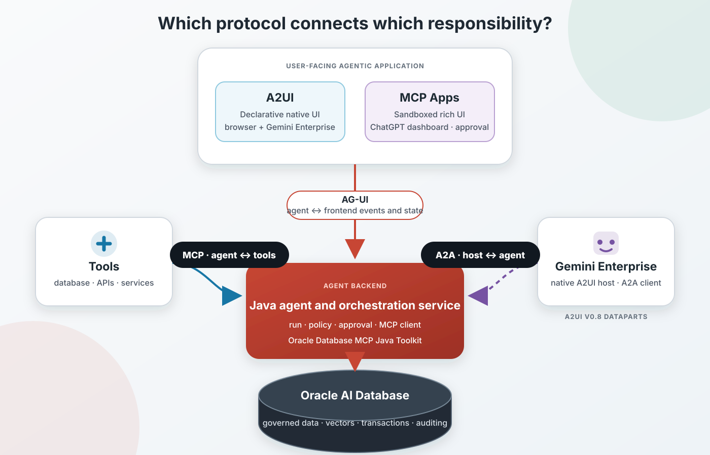

Oracle AI Database · Supply-chain AI · MCP · Agent-to-UI protocols
Build a Governed Supply-Chain Inventory Exchange with A2UI, AG-UI, MCP Apps, the Oracle Database MCP Java Toolkit, and Oracle AI Database
Find products at risk of stockout, explain the inventory factors, and approve a feasible transfer without giving an AI agent unrestricted SQL or write access.
How can an AI agent investigate stockout risk and safely initiate an inventory transfer? This runnable reference application uses Oracle AI Database to calculate feasible source-to-target recommendations from inventory, forecast, safety stock, and transfer-lane data. The Oracle Database MCP Java Toolkit exposes those recommendations as allowlisted tools, AG-UI streams the workflow, A2UI renders native approval controls, and a separate MCP App displays the same governed results in compatible conversational hosts.
The key design choice is that the model and browser do not invent the transfer. Oracle SQL determines the product, source, target, and safe quantity. A person explicitly approves one returned recommendation, and an Oracle stored procedure locks both inventory positions and revalidates the quantities before it reserves stock and records the audited transfer.
I prefer the MCP Toolkit approach for this reference architecture because its governed tool contracts can be reused by multiple agents and MCP-compatible clients. Every application database read and approved write uses the Toolkit; only the separate one-time schema installer connects directly through UCP.
All Java, JavaScript, TypeScript, SQL, YAML, security notes, and setup instructions are in the project folder on GitHub.

Key Takeaways
- Oracle AI Database computes deterministic inventory-transfer recommendations from governed operational data instead of asking the model to guess a movement.
- The Oracle Database MCP Java Toolkit exposes five bounded business operations that can be reused by multiple agents and MCP-compatible clients.
- AG-UI streams agent progress and tool activity; A2UI describes trusted, client-rendered recommendation and approval controls.
- ChatGPT renders the dashboard as a sandboxed MCP App; Gemini Enterprise renders the same governed workflow as native A2UI delivered over A2A.
- Approval is bound to the exact database recommendation, and the stored procedure revalidates it under locks before making an atomic write.
From Stockout Analysis to an Inventory-Transfer Decision
Consider the request: “Show inventory at risk of stockout, explain the demand and safety-stock factors, and let me approve a feasible transfer from another location.” A useful supply-chain AI application must expose more than a prose answer:
- the current run status and governed database tool being invoked;
- a bounded list of products and target locations at risk;
- on-hand, reserved, inbound, forecast, safety-stock, and shortage quantities;
- a feasible source location, transfer quantity, transit time, and cost;
- an explicit approval boundary with an operator note; and
- a transfer ID and auditable completion state.
The agent can decide when to request recommendations and how to explain them. It cannot choose an arbitrary transfer quantity, execute generated SQL, create new UI capabilities, or substitute a different source and target after approval.
What AG-UI, A2UI, MCP Apps, MCP, and A2A Each Solve
| Layer | Primary job | In this application |
|---|---|---|
| AG-UI | Standardize events and shared state between an agent backend and a user-facing application. | Streams run lifecycle, text, MCP tool activity, A2UI messages, state, and recoverable errors over SSE. |
| A2UI | Describe UI structure and data declaratively so a client renders trusted native components. | Describes inventory-transfer recommendation cards, notes, approve, and cancel controls with v0.9.1 envelopes. |
| MCP Apps | Render rich HTML interfaces inside a host-controlled sandboxed iframe and communicate through the host bridge. | ChatGPT displays recommendation metrics and executes explicit app-only approve or reject actions. |
| MCP | Standardize how an AI application discovers and invokes tools and resources. | Connects the Java agent service to five governed Oracle Database operations. |
| A2A | Standardize agent discovery, requests, and results across hosts and agents. | Gemini Enterprise invokes the supply-chain adapter over A2A v0.3; that adapter returns A2UI v0.8 DataParts. |
| Oracle Database MCP Java Toolkit | Expose reusable Oracle Database capabilities to agents and MCP-compatible clients. | Runs an exact allowlist of YAML-defined recommendation reads, ID reservation, procedure-backed approval, and verification. |
| Oracle AI Database | Remain the trusted system of record and execution layer. | Stores products, locations, positions, lanes, and transfers; computes recommendations and enforces locking, transactions, authorization, and auditing. |

Keep the boundaries clear: the Oracle Database MCP Java Toolkit is database-facing. Orchestration and approval policy belong in the agent service; A2UI rendering belongs in the web client; rich MCP App content belongs behind the host bridge.
Where the Protocols Complement and Overlap
A2UI does not mandate one transport. This application carries each A2UI envelope in AG-UI's standard CUSTOM event named a2ui.message. AG-UI supplies lifecycle and state synchronization; A2UI supplies the declarative surface.
The same principle enables Gemini Enterprise without MCP Apps. Gemini Enterprise owns the chat shell and native renderer, calls the application through A2A, and currently expects A2UI v0.8. The standalone browser remains on A2UI v0.9.1 over AG-UI. A host adapter selects the wire contract; it does not duplicate inventory rules or approval policy.
A2UI and MCP Apps can both make an agent interaction visual, but they use different trust and rendering models. A2UI sends declarative components that this application maps to its own allowlisted design system. MCP Apps sends an HTML resource rendered by the host in a sandboxed iframe. “Sandboxed” is a characteristic of the MCP Apps host model, not merely a choice made for this test application.
AG-UI and MCP both carry tool-related information in different relationships. MCP is the downstream agent-to-tool call. AG-UI is the upstream agent-to-user-interface account of that call, expressed here as TOOL_CALL_START, TOOL_CALL_ARGS, TOOL_CALL_END, and TOOL_CALL_RESULT.
Model Inventory, Demand, Transfer Lanes, and Audited Actions
The deterministic sample schema contains four locations, five products, twenty inventory positions, twelve active transfer lanes, and an inventory-transfer audit table. Each inventory position tracks quantities needed to assess stockout risk:
CREATE TABLE inventory_positions (
product_id NUMBER NOT NULL,
location_id NUMBER NOT NULL,
on_hand_qty NUMBER(12,2) NOT NULL,
reserved_qty NUMBER(12,2) DEFAULT 0 NOT NULL,
inbound_qty NUMBER(12,2) DEFAULT 0 NOT NULL,
forecast_7d_qty NUMBER(12,2) NOT NULL,
safety_stock_qty NUMBER(12,2) NOT NULL,
last_updated TIMESTAMP DEFAULT SYSTIMESTAMP NOT NULL,
PRIMARY KEY (product_id, location_id)
);The recommendation view first computes projected available stock, target shortage, and source surplus:
projected_available =
on_hand_qty - reserved_qty + inbound_qty
shortage =
greatest(forecast_7d_qty + safety_stock_qty
- projected_available, 0)
transferable_surplus =
greatest(on_hand_qty - reserved_qty
- forecast_7d_qty - safety_stock_qty, 0)For every short target, the view joins feasible sources through active lanes, caps the recommendation at the lesser of target shortage and source surplus, and ranks sources by transit days, available surplus, and unit transfer cost. The result includes a transparent stockout-risk score and a human-readable rationale.
recommended_transfer_qty =
LEAST(target.shortage_qty, source.transferable_surplus_qty)
ROW_NUMBER() OVER (
PARTITION BY target.product_id, target.location_id
ORDER BY lane.transit_days,
source.transferable_surplus_qty DESC,
lane.unit_transfer_cost
) AS source_rankThis is deliberately a clear reference rule, not a full network optimizer. A production supply-chain planning application may add service levels, lead-time distributions, capacity, shelf life, consolidation, priorities, and multi-transfer optimization.
Expose Bounded Supply-Chain Tools with the Oracle Database MCP Java Toolkit
The Toolkit configuration enables exactly five business operations:
find-stockout-transfer-recommendationsreturns bounded recommendations above a risk threshold.get-stockout-transfer-detailsretrieves one current recommendation by its compound ID.reserve-inventory-transfer-idobtains the next audit identifier.approve-inventory-transfercalls the locked, procedure-backed write.count-inventory-transfersverifies the resulting audit record.
Terminology: “bounded” or “narrow” is descriptive shorthand here, not a formal MCP or Oracle Toolkit tool category. It means a purpose-built, allowlisted operation with constrained inputs and outputs, bind variables, explicit validation, and least-privileged database access. Those properties make behavior safer, more deterministic, and more auditable than unrestricted SQL; they do not make a tool absolutely safe.
toolsets:
supply-chain-exchange:
- find-stockout-transfer-recommendations
- get-stockout-transfer-details
- reserve-inventory-transfer-id
- approve-inventory-transfer
- count-inventory-transfers
tools:
find-stockout-transfer-recommendations:
dataSource: financial-db
parameters:
- name: minimumStockoutRisk
type: number
required: true
- name: maximumRows
type: integer
required: true
statement: >-
SELECT * FROM (
SELECT *
FROM stockout_transfer_recommendation_v
WHERE stockout_risk_score >= :minimumStockoutRisk
ORDER BY stockout_risk_score DESC
) WHERE ROWNUM <= :maximumRowsMcpToolkitSupplyChainRepository launches the pinned official Toolkit over stdio, completes MCP initialization, verifies the server identity, and requires the exact supply-chain-exchange allowlist. Built-in read-query, write-query, table, and administration tools are never enabled.
Stdio compatibility: the pinned Toolkit revision can announce dynamic tool-list changes before its stdio transport is ready when several tools register at startup. The build applies a checked-in one-line patch that disables only those stdio list-change notifications. Static discovery and invocation remain enabled, and the agent fails closed unless all five expected tools—and no others—are present.
Stream the Investigation with AG-UI
The Java service emits official AG-UI event names over Server-Sent Events. Approval is application state in a STATE_SNAPSHOT, not an invented protocol event:
RUN_STARTED
STEP_STARTED
TEXT_MESSAGE_START
TEXT_MESSAGE_CONTENT
TOOL_CALL_START
TOOL_CALL_ARGS
TOOL_CALL_END
TOOL_CALL_RESULT
STEP_FINISHED
STATE_SNAPSHOT status = AWAITING_APPROVAL
CUSTOM name = a2ui.message
TEXT_MESSAGE_END
RUN_FINISHEDThe frontend can show what is happening before the entire recommendation set arrives and can correlate tool arguments and results using one toolCallId. A production adapter should also propagate cancellation and deadlines from the browser through the MCP call.
Render Recommendation and Approval Controls with A2UI
The application creates one A2UI v0.9.1 surface, supplies an adjacency-list component tree, and sends the recommendation data separately:
{
"version": "v0.9.1",
"createSurface": {
"surfaceId": "inventory-transfer-review",
"catalogId": "https://a2ui.org/specification/v0_9_1/catalogs/basic/catalog.json",
"sendDataModel": true
}
}The renderer accepts only the expected version, catalog, surface, envelope shapes, and component types. Generated values enter the DOM through textContent; no A2UI payload can provide executable JavaScript.
The application does not present generic, application-authored follow-up choices. Each selectable card is a concrete recommendation produced by STOCKOUT_TRANSFER_RECOMMENDATION_V, and the only write action is to approve that exact transfer with an operator note or cancel it.
Add a Supply-Chain Dashboard with MCP Apps
The web application at http://127.0.0.1:8080 demonstrates AG-UI and A2UI. The separate mcp-app/ package is a real MCP App demonstration that can run in the official MCP Apps basic host without a third-party account.
registerAppTool(server, "show-inventory-transfer-dashboard", {
title: "Show inventory transfer dashboard",
inputSchema: {
minimumStockoutRisk: z.number().min(0).max(100),
maximumRows: z.number().int().min(1).max(50)
},
_meta: {
ui: { resourceUri: "ui://oracle-supply-chain/inventory-exchange-v1" }
}
}, async ({ minimumStockoutRisk, maximumRows }) => {
const review =
await loadGovernedReview(minimumStockoutRisk, maximumRows);
return {
structuredContent: {
recommendations: review.recommendations,
source: "oracle-db-mcp-java-toolkit"
},
_meta: { approvalId: review.approvalId }
};
});
registerAppTool(server, "approve-inventory-transfer", {
inputSchema: {
approvalId: z.string().uuid(),
recommendationId: z.string(),
approvalNotes: z.string().min(10).max(500)
},
_meta: { ui: { visibility: ["app"] } }
}, approveExactReviewedTransfer);The model-visible tool calls /api/reviews on the Java service. The service invokes the Toolkit's allowlisted read tool and binds a short-lived approval handle to the exact returned rows. The handle travels in widget-only result metadata rather than model-visible content. Selecting a card calls updateModelContext; approving or canceling calls an app-only tool that the model cannot invoke. The iframe receives neither wallet files nor database credentials.
Use the Same Workflow in Gemini Enterprise without MCP Apps
Gemini Enterprise does not need to render the ui:// HTML resource. Its native custom-agent path uses A2A as the conversation transport and A2UI as declarative UI cargo. As of July 28, 2026, the feature is Preview, Gemini Enterprise supports A2A v0.3 compatibility, and its native renderer supports A2UI v0.8 rather than the v0.9.1 envelopes used by this application's standalone browser.
Gemini Enterprise
| A2A v0.3 JSON-RPC
| A2UI v0.8 DataParts
v
gemini-enterprise-a2a
| POST /api/reviews, /api/approve, /api/reject
v
Java agent service
| Oracle Database MCP Java Toolkit
v
Oracle AI DatabaseThe adapter emits deterministic beginRendering, surfaceUpdate, and dataModelUpdate messages containing native cards, approval notes, and one button per exact recommendation. Gemini Enterprise resolves the button context into a v0.8 userAction; the adapter forwards only the approval handle, recommendation ID, and notes. The Java service recovers the immutable recommendation and Oracle revalidates it under locks. Thus ChatGPT and Gemini Enterprise share the governed workflow and transaction, but not the host UI protocol.
Bind Human Approval to One Exact Transfer
When the read completes, the agent service issues a short-lived approval ID bound to the actor and an immutable map of every returned recommendation. The browser posts only the approval ID, recommendation ID, and notes. It cannot replace the product, source, target, or quantity.
The Toolkit's YAML schema does not currently express callable OUT parameters, so the write path first reserves a transfer ID from a sequence and then calls an input-only procedure. Inside the procedure, Oracle locks the source and target inventory positions in location order, recomputes current surplus and shortage, and rejects any quantity greater than the current safe amount:
v_safe_transfer_qty := LEAST(v_source_surplus, v_target_shortage);
IF p_transfer_qty > v_safe_transfer_qty THEN
RAISE_APPLICATION_ERROR(
-20007,
'Recommendation is stale; current safe transfer quantity is ' ||
TO_CHAR(v_safe_transfer_qty));
END IF;
INSERT INTO inventory_transfers (...);
UPDATE inventory_positions
SET reserved_qty = reserved_qty + p_transfer_qty
WHERE product_id = p_product_id
AND location_id = p_source_location_id;The insert and inventory reservation are one tool statement and one transaction. Canceling consumes the pending approval without invoking the write. Reuse, an actor change, an unknown recommendation, invalid notes, or stale inventory causes rejection.
Run the Supply-Chain Exchange
The default configuration reuses the financialdb_high database alias and FINANCIAL schema from the observability demo. Copy the environment template, point it at the wallet, and supply the password locally:
cd a2ui_agui_mcpapps_mcptoolkit
cp .env.example .env
# Set DB_PASSWORD and confirm WALLET_DIR.
cd agent-service
./setup-database.sh
./test.sh
./run.sh
# Open http://127.0.0.1:8080The guarded installer creates the supply-chain objects without dropping or modifying unrelated schema objects. The runtime launches a pinned revision of the Oracle Database MCP Java Toolkit over stdio, enables only supply-chain-exchange, verifies the exact tools, and lets the Toolkit's UCP pool own every runtime database connection.
Walk Through the Application End to End
- Prepare the database. Run
agent-service/setup-database.sh. The installer creates four locations, five products, twenty inventory positions, twelve lanes, the recommendation view, the transfer sequence, and the input-only approval procedure. - Start the Java service and Toolkit. Run
agent-service/run.sh.McpToolkitSupplyChainRepositorystarts the Toolkit over stdio, completes MCP initialization, verifies its identity and exact tool allowlist, and exposes the web client and API. - Open the inventory exchange. Browse to
http://127.0.0.1:8080. The page contains the request form, AG-UI event rail, and an initially empty A2UI surface. - Set the query bounds. Choose a minimum stockout-risk score and maximum recommendation count, then run the analysis. The service validates both values and begins the SSE response.
- Retrieve governed recommendations. The repository calls
find-stockout-transfer-recommendations. The Toolkit borrows a UCP connection, binds the values, queriesSTOCKOUT_TRANSFER_RECOMMENDATION_V, and returns structured rows through MCP. - Inspect the streamed result. AG-UI displays the lifecycle and tool activity. A2UI renders cards with SKU, product, source, target, stockout risk, shortage, recommended quantity, transit time, unit cost, and rationale.
- Approve or cancel. Select one database-returned recommendation, enter approval notes, and approve. The short-lived approval token recovers the exact bound transfer. Cancel instead consumes the approval and performs no write.
- Commit through MCP. The Toolkit reserves an ID and invokes
APPROVE_INVENTORY_TRANSFER_MCP. Oracle locks and revalidates both positions, writesINVENTORY_TRANSFERS, reserves the source quantity, and commits only the successful statement. - Run the smoke test. From another terminal, run
scripts/smoke-test.sh. It exercises the live recommendation, approval, rejection, and health paths. - Open the MCP App locally. Keep the Java service running. Run
mcp-app/run.sh, thenmcp-app/run-basic-host.shin a third terminal. Openhttp://127.0.0.1:8082, selectshow-inventory-transfer-dashboard, and invoke it. Select a card and verify both explicit approval and cancel paths. - Use ChatGPT. Expose port 3001 through an HTTPS tunnel, enable ChatGPT Developer Mode, and register the URL ending in
/mcp. Select the plugin and ask: “Show the inventory transfer dashboard for products with a minimum stockout risk of 70, limited to 10 recommendations.” Select an exact recommendation and approve it in the MCP App. ChatGPT cannot connect directly to127.0.0.1. - Optionally use Gemini Enterprise. Run
gemini-enterprise-a2a/run.sh, publish its A2A endpoint through authenticated HTTPS, and register its agent card as a custom A2A agent. Gemini Enterprise renders the A2UI v0.8 review natively; it does not consume the MCP App. - Optionally use Claude. Register the same tunneled
/mcpendpoint as a custom connector in a supported Claude plan. The official local basic host remains the reproducible, account-free path.
Security and Governance Checklist
- Use a least-privileged database principal with only the required view and procedure grants.
- Use stdio for the local child process; use TLS and OAuth 2.0 for remote MCP.
- Enable only purpose-built tools. Do not use
-Dtools=*or unrestrictedwrite-query. - Validate and bind every user value; enforce score, row-count, text-length, and timeout limits.
- Bind approval to actor, recommendation data, expiry, and a single use; add durable idempotency for production.
- Revalidate current inventory under locks at the final database boundary.
- Log tool, actor, timestamp, recommendation, approval, and status without logging secrets.
- Allowlist A2UI catalogs and components; treat MCP App content as untrusted and apply sandbox, CSP, and permission controls.
- Keep wallets, passwords, tokens, and client secrets out of the browser, model context, and repository.
Decision Guide
| Use | When |
|---|---|
| AG-UI | You own a custom agent frontend and need streamed messages, tool activity, progress, and synchronized state. |
| A2UI | The agent should compose native, accessible controls from a restricted catalog without sending executable code, including Gemini Enterprise's native renderer. |
| MCP Apps | ChatGPT or another compatible host needs a sandboxed HTML dashboard, chart, canvas, or complex embedded workflow. |
| Oracle Database MCP Java Toolkit | Governed Oracle data and transactional business operations must be exposed as reusable MCP tools. |
| A2A | Gemini Enterprise or another A2A host needs to discover and invoke the externally hosted agent. |
| Combined pattern | A supply-chain experience needs one governed domain workflow presented through host-specific transport and UI adapters. |
Limitations and Next Steps
This reference application uses a transparent single-transfer heuristic. It does not claim to replace supply-network optimization, order management, transportation planning, or warehouse execution. It also uses in-process approval state and a local stdio Toolkit child process. ChatGPT and Gemini Enterprise still require account-level host validation and sanitized evidence before publication claims should say that either remote host was tested end to end.
Gemini Enterprise's A2UI support is Preview and currently limited to v0.8. The browser's v0.9.1 payload and Gemini Enterprise's v0.8 payload are intentionally separate builders over one domain API. Future host upgrades should be handled by explicit capability/version negotiation and compatibility tests rather than silently changing every client at once.
Production next steps include authenticated identity, durable approvals and idempotency, Oracle row-level authorization, Streamable HTTP with TLS and OAuth 2.0, Model Armor configured in the A2A application path, location and value authority limits, concurrent-transfer testing, richer forecasting, and an optimizer that evaluates multiple interacting transfers. Gemini Enterprise's console-level Model Armor settings do not automatically protect a separately hosted A2A agent. Vector search or retrieval-augmented generation could add policy and disruption explanations, while the deterministic database operation remains the final execution boundary.
References
- Source code for this supply-chain reference application
- Oracle Database MCP Java Toolkit README
- AG-UI protocol overview
- A2UI project and specification
- MCP Apps overview
- Build an MCP App
- Official MCP Apps SDK, examples, and basic host
- OpenAI: add UI to an MCP server
- Connect and test a ChatGPT plugin
- Gemini Enterprise: register an A2UI/A2A agent
- Gemini Enterprise: register an A2A agent
- Model Context Protocol specification
- Agent2Agent protocol documentation
- Oracle AI Database
Frequently Asked Questions
Who determines the inventory-transfer action?
The Oracle recommendation view determines the product, source, target, and safe quantity from governed inventory and lane data. The model explains and presents the recommendation; the person approves or cancels it; the procedure revalidates it before writing.
Does A2UI replace AG-UI?
No. A2UI describes UI surfaces and data; AG-UI carries agent events and state. This application transports A2UI messages inside AG-UI custom events.
Does the MCP App replace the web client?
No. The custom web client demonstrates AG-UI and A2UI. The separate MCP App renders the same Toolkit-backed recommendations inside a compatible conversational host.
Can the same application run in ChatGPT and Gemini Enterprise?
Yes at the workflow level, not by sending the same UI artifact. ChatGPT renders the ui:// MCP App and its app-only action tools. Gemini Enterprise calls an A2A adapter and renders native A2UI v0.8 controls. Both adapters use the same Java approval service, Toolkit tools, recommendation IDs, and Oracle transaction.
Does Gemini Enterprise need MCP Apps support?
No. Gemini Enterprise supplies its own chat shell and native A2UI renderer. The adapter sends declarative A2UI over A2A, so no sandboxed MCP App HTML is required there.
Why not let the agent generate SQL or choose any transfer?
A bounded recommendation view and stored procedure make the allowed data, feasibility formula, privileges, locks, transaction, and audit result explicit. Unrestricted SQL or client-selected quantities would expand the attack surface and make execution less deterministic.
Where is approval enforced?
The agent service binds approval to the authenticated actor and exact returned recommendation. The MCP tool accepts only validated inputs, and Oracle AI Database locks and rechecks current stock before it commits the transfer.